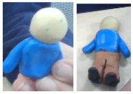

Set in 2012: A group of 12 scientists visits an abandoned radioactive hospital to collect nuclear waste and process it in order to dispose of it safely and allow rebuilding in the area. They didn’t know that there was bacteria contaminating the halls of the hospital- so later, in the lab, when everyone took their suits off, the airborne bacteria spread from one team member who improperly wore their gear, to the whole team and they all became infected. When the bacteria multiplied and eventually settled in their brains, they turned into zombies with a human-like understanding of movement and behavior. There was a 13th scientist who was a part of their team but was unable to go with them to the hospital due to some health concerns, her genetics ended up being the reason behind her immunity to the zombie bacterium. When she realized what was going on, she alerted the whole building, all but 8 others became victims of the zombies. After evacuating and making base elsewhere, the 9 remaining human scientists became determined to kill the zombies and eradicate the bacteria by blowing up the labs.
The purpose of this game is we want to encourage team building and communication as well as exercise. We will measure the impact of this game by seeing how often people communicate and speak to each other. We will also be monitoring the number of points each team earns. We can measure the players’ heart rates to determine whether participants are getting in some exercise.
Here is a model showing what this game traches/shows
Purpose: The goal of this is to inform people about the effects of many people not being able to get an education and to persuade more people to fund for schools and provide people with money to be able to go to school.
In this step, I started to figure out who my characters were and what my setting was.
Below is my work:
Protagonist: A sick person needs to go to the doctor and receive care to get better.
Strengths and weaknesses: Doesn’t have enough money
Antagonist:The state representative doesn’t allow the sick person to receive care unless money is provided.
Stengths and Weaknesses:Decide whether people receive care or not
In this step, I think up my story and I will decide whether I want to do a stop motion animation, zoetrope, etc. I decided to make a stop motion animation.
Here is my storyboard:


In this step, I started to create the charcters and objects that were going to used for the animation. I made the bed, car, and sick person.
Here is just one of the items I made.
In this step, we started working with the dragonframe software and used the camera to take pictures of the settign and characters to make the stop motion animation.
In this section, I just reflected on what I did in this project.
Here is my reflection
Storyboard, Character, Set, and Mechanical Design - I helped take pictures of the different scenes as well as help make the parts we needed to make longer, longer.
Technology and Code - I used dragonframe software to help make the stop motion animation. I took pictures one by one, little by little, and after a while when all of the pictures were put together, the stop motion animation was created.
Social Impact, Audience, and 5 Whys - My work with the characters and technology helped create a physical animation that shows healthcare and how poor people don’t have enough money to pay for healthcare. The bed, the different images I used and the different character I used helped to show this.